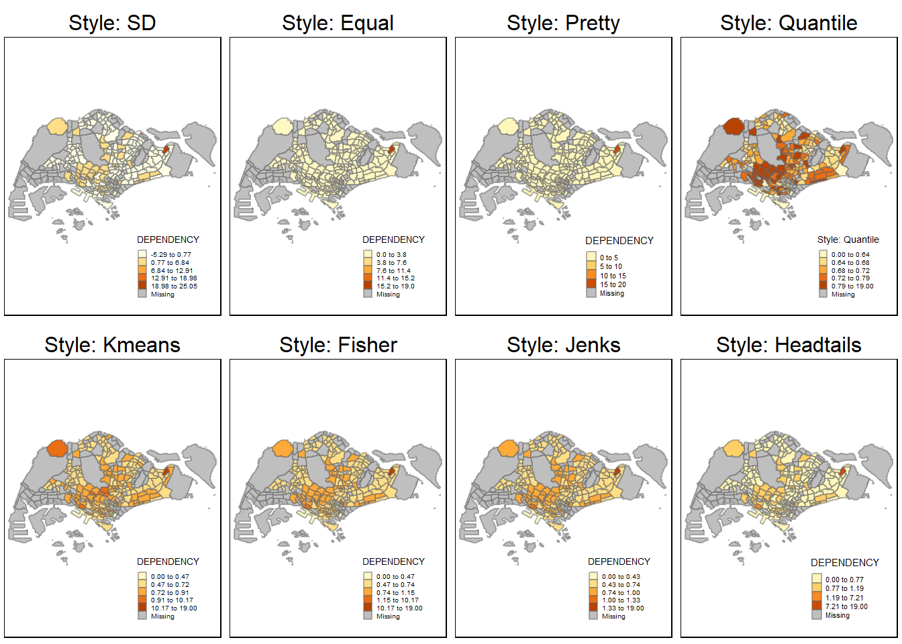
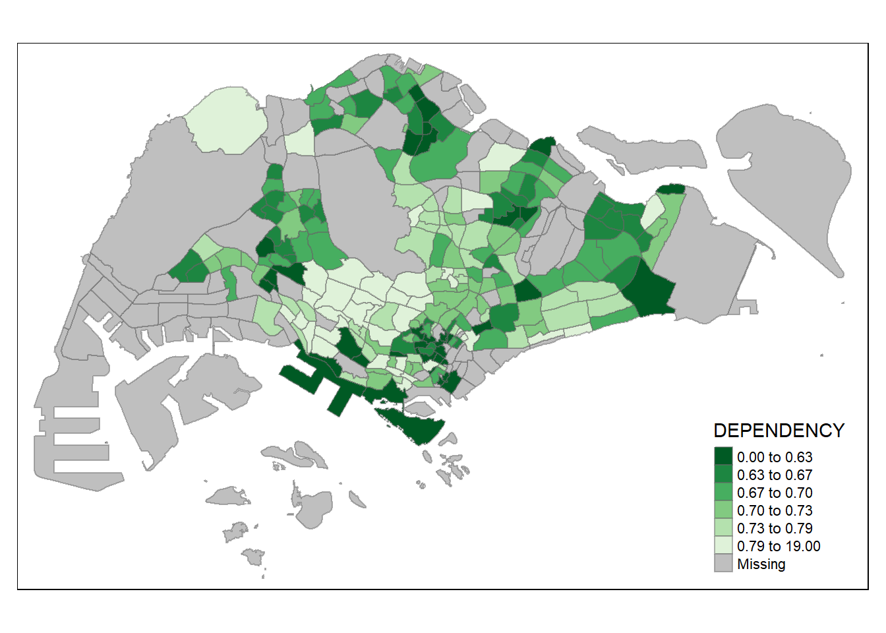

pacman::p_load(sf, tidyverse)Hands-on Exercise 1: Geospatial Data Wrangling with R
Overview
In this hands-on exercise, I learned how to import, wrangle and visualise geospatial data using the appropriate R packages.
Part 1
Data Sources
The data used in this exercise are obtained from the following sources on 18 November 2022:
Airbnb Singapore Listings - scroll down to Singapore, download listings.csv
#1-3 are geospatial data while #4 is in .csv with latitude and longitude information.
Getting Started
The code chunk below installs and loads sf and tidyverse packages into the R environment.
Importing Geospatial Data
Importing Polygon Feature Data
From the sf package, use st_read() function to import MP14_SUBZONE_WEB_PL shapefile into R as a polygon feature dataframe.
mpsz <- st_read(dsn = "data/geospatial",
layer = "MP14_SUBZONE_WEB_PL")Reading layer `MP14_SUBZONE_WEB_PL' from data source
`C:\zhuyiting1\ISSS624\Hands-on_Ex1\data\geospatial' using driver `ESRI Shapefile'
Simple feature collection with 323 features and 15 fields
Geometry type: MULTIPOLYGON
Dimension: XY
Bounding box: xmin: 2667.538 ymin: 15748.72 xmax: 56396.44 ymax: 50256.33
Projected CRS: SVY21There are 323 features and 15 fields in the \(mpsz\) dataframe. The geometry type is multipolygon. It is in the svy21 projected coordinates system.
Importing Polyline Feature Data
From the sf package, similarly use st_read() function to import CyclingPathGazette shapefile into R as a line feature dataframe.
cyclingpath = st_read(dsn = "data/geospatial",
layer = "CyclingPathGazette")Reading layer `CyclingPathGazette' from data source
`C:\zhuyiting1\ISSS624\Hands-on_Ex1\data\geospatial' using driver `ESRI Shapefile'
Simple feature collection with 2248 features and 2 fields
Geometry type: MULTILINESTRING
Dimension: XY
Bounding box: xmin: 11854.32 ymin: 28347.98 xmax: 42626.09 ymax: 48948.15
Projected CRS: SVY21There are 2248 features and 2 fields in the \(cyclingpath\) dataframe. The geometry type is multilinestring. It is also in the svy21 projected coordinates system.
Importing KML Data
As above, from the sf package, use st_read() function to import pre-schools-location-kml file into R. However, as the data format is .kml, we will use the following format instead of the earlier dsn and layer arguments:
preschool = st_read("data/geospatial/pre-schools-location-kml.kml")Reading layer `PRESCHOOLS_LOCATION' from data source
`C:\zhuyiting1\ISSS624\Hands-on_Ex1\data\geospatial\pre-schools-location-kml.kml'
using driver `KML'
Simple feature collection with 1925 features and 2 fields
Geometry type: POINT
Dimension: XYZ
Bounding box: xmin: 103.6824 ymin: 1.247759 xmax: 103.9897 ymax: 1.462134
z_range: zmin: 0 zmax: 0
Geodetic CRS: WGS 84There are 1925 features and 2 fields in the \(preschool\) dataframe. The geometry type is point. Unlike \(mpsz\) and \(cyclingpath\), it is in the wgs84 geodetic coordinates system. We will need to transform the data to svy21 coordinates system later.
Knowing the Data
Top-line geometry information of the mpsz dataframe:
st_geometry(mpsz)Geometry set for 323 features
Geometry type: MULTIPOLYGON
Dimension: XY
Bounding box: xmin: 2667.538 ymin: 15748.72 xmax: 56396.44 ymax: 50256.33
Projected CRS: SVY21
First 5 geometries:MULTIPOLYGON (((31495.56 30140.01, 31980.96 296...MULTIPOLYGON (((29092.28 30021.89, 29119.64 300...MULTIPOLYGON (((29932.33 29879.12, 29947.32 298...MULTIPOLYGON (((27131.28 30059.73, 27088.33 297...MULTIPOLYGON (((26451.03 30396.46, 26440.47 303...The multipolygon information of the first 5 geometries are shown.
Next, we will use glimpse() of the dplyr package:
glimpse(mpsz)Rows: 323
Columns: 16
$ OBJECTID <int> 1, 2, 3, 4, 5, 6, 7, 8, 9, 10, 11, 12, 13, 14, 15, 16, 17, …
$ SUBZONE_NO <int> 1, 1, 3, 8, 3, 7, 9, 2, 13, 7, 12, 6, 1, 5, 1, 1, 3, 2, 2, …
$ SUBZONE_N <chr> "MARINA SOUTH", "PEARL'S HILL", "BOAT QUAY", "HENDERSON HIL…
$ SUBZONE_C <chr> "MSSZ01", "OTSZ01", "SRSZ03", "BMSZ08", "BMSZ03", "BMSZ07",…
$ CA_IND <chr> "Y", "Y", "Y", "N", "N", "N", "N", "Y", "N", "N", "N", "N",…
$ PLN_AREA_N <chr> "MARINA SOUTH", "OUTRAM", "SINGAPORE RIVER", "BUKIT MERAH",…
$ PLN_AREA_C <chr> "MS", "OT", "SR", "BM", "BM", "BM", "BM", "SR", "QT", "QT",…
$ REGION_N <chr> "CENTRAL REGION", "CENTRAL REGION", "CENTRAL REGION", "CENT…
$ REGION_C <chr> "CR", "CR", "CR", "CR", "CR", "CR", "CR", "CR", "CR", "CR",…
$ INC_CRC <chr> "5ED7EB253F99252E", "8C7149B9EB32EEFC", "C35FEFF02B13E0E5",…
$ FMEL_UPD_D <date> 2014-12-05, 2014-12-05, 2014-12-05, 2014-12-05, 2014-12-05…
$ X_ADDR <dbl> 31595.84, 28679.06, 29654.96, 26782.83, 26201.96, 25358.82,…
$ Y_ADDR <dbl> 29220.19, 29782.05, 29974.66, 29933.77, 30005.70, 29991.38,…
$ SHAPE_Leng <dbl> 5267.381, 3506.107, 1740.926, 3313.625, 2825.594, 4428.913,…
$ SHAPE_Area <dbl> 1630379.27, 559816.25, 160807.50, 595428.89, 387429.44, 103…
$ geometry <MULTIPOLYGON [m]> MULTIPOLYGON (((31495.56 30..., MULTIPOLYGON (…glimpse() shows the data type of each field (int, chr, date, dbl (double-precision values)) and the first few entries for each field.
For complete information of a feature object, head() from R’s built-in package can give us the first n rows of the dataframe:
head(mpsz, n=5)Simple feature collection with 5 features and 15 fields
Geometry type: MULTIPOLYGON
Dimension: XY
Bounding box: xmin: 25867.68 ymin: 28369.47 xmax: 32362.39 ymax: 30435.54
Projected CRS: SVY21
OBJECTID SUBZONE_NO SUBZONE_N SUBZONE_C CA_IND PLN_AREA_N
1 1 1 MARINA SOUTH MSSZ01 Y MARINA SOUTH
2 2 1 PEARL'S HILL OTSZ01 Y OUTRAM
3 3 3 BOAT QUAY SRSZ03 Y SINGAPORE RIVER
4 4 8 HENDERSON HILL BMSZ08 N BUKIT MERAH
5 5 3 REDHILL BMSZ03 N BUKIT MERAH
PLN_AREA_C REGION_N REGION_C INC_CRC FMEL_UPD_D X_ADDR
1 MS CENTRAL REGION CR 5ED7EB253F99252E 2014-12-05 31595.84
2 OT CENTRAL REGION CR 8C7149B9EB32EEFC 2014-12-05 28679.06
3 SR CENTRAL REGION CR C35FEFF02B13E0E5 2014-12-05 29654.96
4 BM CENTRAL REGION CR 3775D82C5DDBEFBD 2014-12-05 26782.83
5 BM CENTRAL REGION CR 85D9ABEF0A40678F 2014-12-05 26201.96
Y_ADDR SHAPE_Leng SHAPE_Area geometry
1 29220.19 5267.381 1630379.3 MULTIPOLYGON (((31495.56 30...
2 29782.05 3506.107 559816.2 MULTIPOLYGON (((29092.28 30...
3 29974.66 1740.926 160807.5 MULTIPOLYGON (((29932.33 29...
4 29933.77 3313.625 595428.9 MULTIPOLYGON (((27131.28 30...
5 30005.70 2825.594 387429.4 MULTIPOLYGON (((26451.03 30...Plotting the Geospatial Data
plot() from R Graphic allows us to visualise the geospatial features of the data that we cannot easily pick up in plain rows and columns.
plot(mpsz)Warning: plotting the first 9 out of 15 attributes; use max.plot = 15 to plot
all
The default plot of an sf object is a multi-plot of all attributes, up to a reasonable maximum. We can also specify only plotting the geometry or a specific attribute (like the 6th plot above) as shown below:
plot(st_geometry(mpsz))
plot(mpsz["PLN_AREA_N"])
Map Projection
Similar to data preprocessing for the usual dataframe, geoprocessing should be done to ensure that the data are projected using the same coordinate system. We will be using projection transformation to project a simple feature dataframe from one coordinate system to another.
Assigning EPSG Code
Always check for the coordinate system of the source data, which can be done as such:
st_crs(mpsz)Coordinate Reference System:
User input: SVY21
wkt:
PROJCRS["SVY21",
BASEGEOGCRS["SVY21[WGS84]",
DATUM["World Geodetic System 1984",
ELLIPSOID["WGS 84",6378137,298.257223563,
LENGTHUNIT["metre",1]],
ID["EPSG",6326]],
PRIMEM["Greenwich",0,
ANGLEUNIT["Degree",0.0174532925199433]]],
CONVERSION["unnamed",
METHOD["Transverse Mercator",
ID["EPSG",9807]],
PARAMETER["Latitude of natural origin",1.36666666666667,
ANGLEUNIT["Degree",0.0174532925199433],
ID["EPSG",8801]],
PARAMETER["Longitude of natural origin",103.833333333333,
ANGLEUNIT["Degree",0.0174532925199433],
ID["EPSG",8802]],
PARAMETER["Scale factor at natural origin",1,
SCALEUNIT["unity",1],
ID["EPSG",8805]],
PARAMETER["False easting",28001.642,
LENGTHUNIT["metre",1],
ID["EPSG",8806]],
PARAMETER["False northing",38744.572,
LENGTHUNIT["metre",1],
ID["EPSG",8807]]],
CS[Cartesian,2],
AXIS["(E)",east,
ORDER[1],
LENGTHUNIT["metre",1,
ID["EPSG",9001]]],
AXIS["(N)",north,
ORDER[2],
LENGTHUNIT["metre",1,
ID["EPSG",9001]]]]With reference to the last part of the output (CS[Cartesian,2]), the EPSG code is 9001. However, for svy21, the correct EPSG code should be 3414. We want to assign the correct EPSG code to the \(mpsz\) dataframe, using st_set_crs() of the sf package.
mpsz3414 <- st_set_crs(mpsz, 3414)Warning: st_crs<- : replacing crs does not reproject data; use st_transform for
thatChecking that it has been performed successfully:
st_crs(mpsz3414)Coordinate Reference System:
User input: EPSG:3414
wkt:
PROJCRS["SVY21 / Singapore TM",
BASEGEOGCRS["SVY21",
DATUM["SVY21",
ELLIPSOID["WGS 84",6378137,298.257223563,
LENGTHUNIT["metre",1]]],
PRIMEM["Greenwich",0,
ANGLEUNIT["degree",0.0174532925199433]],
ID["EPSG",4757]],
CONVERSION["Singapore Transverse Mercator",
METHOD["Transverse Mercator",
ID["EPSG",9807]],
PARAMETER["Latitude of natural origin",1.36666666666667,
ANGLEUNIT["degree",0.0174532925199433],
ID["EPSG",8801]],
PARAMETER["Longitude of natural origin",103.833333333333,
ANGLEUNIT["degree",0.0174532925199433],
ID["EPSG",8802]],
PARAMETER["Scale factor at natural origin",1,
SCALEUNIT["unity",1],
ID["EPSG",8805]],
PARAMETER["False easting",28001.642,
LENGTHUNIT["metre",1],
ID["EPSG",8806]],
PARAMETER["False northing",38744.572,
LENGTHUNIT["metre",1],
ID["EPSG",8807]]],
CS[Cartesian,2],
AXIS["northing (N)",north,
ORDER[1],
LENGTHUNIT["metre",1]],
AXIS["easting (E)",east,
ORDER[2],
LENGTHUNIT["metre",1]],
USAGE[
SCOPE["Cadastre, engineering survey, topographic mapping."],
AREA["Singapore - onshore and offshore."],
BBOX[1.13,103.59,1.47,104.07]],
ID["EPSG",3414]]Now the ID under USAGE indicates “EPSG”, 3414.
Transforming Projection from wgs84 to svy21
Geographic coordinate system is transformed to projected coordinate system here to allow for analysis using distance and/or area measurements. For the \(preschool\) dataframe, as we saw earlier that the geodetic CRS is wgs84, it is not appropriate to use st_set_crs() like we did for $mpsz$. Instead, st_transform() from the same sf package can help us do the job. This is because we need to reproject \(preschool\) from one coordinate system to another mathematically.
preschool3414 <- st_transform(preschool,
crs = 3414)
# In practice, we need to find the appropriate projection coordinate system to use before perfroming the projection transformation.Checking the projected coordinate system:
st_geometry(preschool3414)Geometry set for 1925 features
Geometry type: POINT
Dimension: XYZ
Bounding box: xmin: 11203.01 ymin: 25596.33 xmax: 45404.24 ymax: 49300.88
z_range: zmin: 0 zmax: 0
Projected CRS: SVY21 / Singapore TM
First 5 geometries:POINT Z (13258.34 35611.04 0)POINT Z (35272.09 41373.42 0)POINT Z (25050.54 46634.14 0)POINT Z (22892.48 46127.66 0)POINT Z (34155.79 41949.13 0)st_crs(preschool3414)Coordinate Reference System:
User input: EPSG:3414
wkt:
PROJCRS["SVY21 / Singapore TM",
BASEGEOGCRS["SVY21",
DATUM["SVY21",
ELLIPSOID["WGS 84",6378137,298.257223563,
LENGTHUNIT["metre",1]]],
PRIMEM["Greenwich",0,
ANGLEUNIT["degree",0.0174532925199433]],
ID["EPSG",4757]],
CONVERSION["Singapore Transverse Mercator",
METHOD["Transverse Mercator",
ID["EPSG",9807]],
PARAMETER["Latitude of natural origin",1.36666666666667,
ANGLEUNIT["degree",0.0174532925199433],
ID["EPSG",8801]],
PARAMETER["Longitude of natural origin",103.833333333333,
ANGLEUNIT["degree",0.0174532925199433],
ID["EPSG",8802]],
PARAMETER["Scale factor at natural origin",1,
SCALEUNIT["unity",1],
ID["EPSG",8805]],
PARAMETER["False easting",28001.642,
LENGTHUNIT["metre",1],
ID["EPSG",8806]],
PARAMETER["False northing",38744.572,
LENGTHUNIT["metre",1],
ID["EPSG",8807]]],
CS[Cartesian,2],
AXIS["northing (N)",north,
ORDER[1],
LENGTHUNIT["metre",1]],
AXIS["easting (E)",east,
ORDER[2],
LENGTHUNIT["metre",1]],
USAGE[
SCOPE["Cadastre, engineering survey, topographic mapping."],
AREA["Singapore - onshore and offshore."],
BBOX[1.13,103.59,1.47,104.07]],
ID["EPSG",3414]]The projected coordinate system has been revised to svy21. USAGE ID is now “EPSG”, 3414.
Working with Aspatial Data
Recall we are also using the listings.csv file from Inside Airbnb. The data is aspatial, as the data itself is not geospatial but it has data fields that capture the x- and y-coordinates of the data points.
Step 1
Load the data into a dataframe \(listings\):
listings <- read_csv("data/aspatial/listings.csv")Rows: 4161 Columns: 18
── Column specification ────────────────────────────────────────────────────────
Delimiter: ","
chr (6): name, host_name, neighbourhood_group, neighbourhood, room_type, l...
dbl (11): id, host_id, latitude, longitude, price, minimum_nights, number_o...
date (1): last_review
ℹ Use `spec()` to retrieve the full column specification for this data.
ℹ Specify the column types or set `show_col_types = FALSE` to quiet this message.Using read_csv() from the readr package within tidyverse, we see that the dataframe with 4161 rows and 18 columns is imported to R.
Step 2
To look at it in a bit more detail:
list(listings)[[1]]
# A tibble: 4,161 × 18
id name host_id host_…¹ neigh…² neigh…³ latit…⁴ longi…⁵ room_…⁶ price
<dbl> <chr> <dbl> <chr> <chr> <chr> <dbl> <dbl> <chr> <dbl>
1 50646 Pleasan… 227796 Sujatha Centra… Bukit … 1.33 104. Privat… 80
2 71609 Ensuite… 367042 Belinda East R… Tampin… 1.35 104. Privat… 145
3 71896 B&B Ro… 367042 Belinda East R… Tampin… 1.35 104. Privat… 85
4 71903 Room 2-… 367042 Belinda East R… Tampin… 1.35 104. Privat… 85
5 275344 15 mins… 1439258 Kay Centra… Bukit … 1.29 104. Privat… 49
6 289234 Booking… 367042 Belinda East R… Tampin… 1.34 104. Privat… 184
7 294281 5 mins … 1521514 Elizab… Centra… Newton 1.31 104. Privat… 79
8 324945 Cozy Bl… 1439258 Kay Centra… Bukit … 1.29 104. Privat… 49
9 330089 Cozy Bl… 1439258 Kay Centra… Bukit … 1.29 104. Privat… 55
10 330095 10 mins… 1439258 Kay Centra… Bukit … 1.29 104. Privat… 55
# … with 4,151 more rows, 8 more variables: minimum_nights <dbl>,
# number_of_reviews <dbl>, last_review <date>, reviews_per_month <dbl>,
# calculated_host_listings_count <dbl>, availability_365 <dbl>,
# number_of_reviews_ltm <dbl>, license <chr>, and abbreviated variable names
# ¹host_name, ²neighbourhood_group, ³neighbourhood, ⁴latitude, ⁵longitude,
# ⁶room_typeWe see that the \(latitude\) and \(longitude\) data fields form 2 of the columns, and are in decimal degree format. As a best guess, we will assume that the data is in wgs84 geographic coordinate system.
Step 3
Convert \(listings\) dataframe into a simple feature dataframe and perform transformation to projected coordinate system:
listings_sf <- st_as_sf(listings,
coords = c("longitude", "latitude"), # coords argument takes in x-coordinates before y-coordinates
crs = 4326) %>% # 4326 is the wgs84 geographic coordinate system
st_transform(crs = 3414) # %>% performs nested st_transform() to svy21 projected coordinate system
glimpse(listings_sf) # shows the topline info of the transformed dataRows: 4,161
Columns: 17
$ id <dbl> 50646, 71609, 71896, 71903, 275344, 289…
$ name <chr> "Pleasant Room along Bukit Timah", "Ens…
$ host_id <dbl> 227796, 367042, 367042, 367042, 1439258…
$ host_name <chr> "Sujatha", "Belinda", "Belinda", "Belin…
$ neighbourhood_group <chr> "Central Region", "East Region", "East …
$ neighbourhood <chr> "Bukit Timah", "Tampines", "Tampines", …
$ room_type <chr> "Private room", "Private room", "Privat…
$ price <dbl> 80, 145, 85, 85, 49, 184, 79, 49, 55, 5…
$ minimum_nights <dbl> 92, 92, 92, 92, 60, 92, 92, 60, 60, 60,…
$ number_of_reviews <dbl> 18, 20, 24, 47, 14, 12, 133, 17, 12, 3,…
$ last_review <date> 2014-12-26, 2020-01-17, 2019-10-13, 20…
$ reviews_per_month <dbl> 0.18, 0.15, 0.18, 0.34, 0.11, 0.10, 1.0…
$ calculated_host_listings_count <dbl> 1, 6, 6, 6, 44, 6, 7, 44, 44, 44, 6, 7,…
$ availability_365 <dbl> 365, 340, 265, 365, 296, 285, 365, 181,…
$ number_of_reviews_ltm <dbl> 0, 0, 0, 0, 1, 0, 0, 3, 2, 0, 1, 0, 0, …
$ license <chr> NA, NA, NA, NA, "S0399", NA, NA, "S0399…
$ geometry <POINT [m]> POINT (22646.02 35167.9), POINT (…\(latitude\) and \(longitude\) columns are dropped as they have been used to generate the new \(geometry\) column in svy21 projected coordinate system.
Geoprocessing - Buffering
To compute a 5-metre buffer on both ends of the current cycling path using the \(cyclingpath\) dataframe:
buffer_cycling_5m <- st_buffer(cyclingpath,
dist = 5,
nQuadSegs = 30)We can see that buffer_cycling_5m is as follows:
buffer_cycling_5mSimple feature collection with 2248 features and 2 fields
Geometry type: GEOMETRY
Dimension: XY
Bounding box: xmin: 11849.32 ymin: 28342.98 xmax: 42631.09 ymax: 48953.15
Projected CRS: SVY21
First 10 features:
PLANNING_A PLANNING_1 geometry
1 <NA> <NA> POLYGON ((16004.15 36799.78...
2 <NA> <NA> POLYGON ((16013.15 36849.86...
3 <NA> <NA> POLYGON ((16016.91 36892.98...
4 <NA> <NA> POLYGON ((16017.59 36864, 1...
5 <NA> <NA> POLYGON ((16022.36 36900.57...
6 <NA> <NA> POLYGON ((15903.87 36941.12...
7 <NA> <NA> POLYGON ((17791.37 34725.6,...
8 <NA> <NA> POLYGON ((17845.19 34694.74...
9 <NA> <NA> POLYGON ((16719.51 36124.49...
10 <NA> <NA> POLYGON ((17027.74 36260.02...We then add a new variable in buffer_cycling_5m to calculate the area of the buffer:
buffer_cycling_5m$AREA <- st_area(buffer_cycling_5m)
buffer_cycling_5mSimple feature collection with 2248 features and 3 fields
Geometry type: GEOMETRY
Dimension: XY
Bounding box: xmin: 11849.32 ymin: 28342.98 xmax: 42631.09 ymax: 48953.15
Projected CRS: SVY21
First 10 features:
PLANNING_A PLANNING_1 geometry AREA
1 <NA> <NA> POLYGON ((16004.15 36799.78... 186.2934 [m^2]
2 <NA> <NA> POLYGON ((16013.15 36849.86... 293.4840 [m^2]
3 <NA> <NA> POLYGON ((16016.91 36892.98... 284.8275 [m^2]
4 <NA> <NA> POLYGON ((16017.59 36864, 1... 144.8915 [m^2]
5 <NA> <NA> POLYGON ((16022.36 36900.57... 281.2016 [m^2]
6 <NA> <NA> POLYGON ((15903.87 36941.12... 398.7081 [m^2]
7 <NA> <NA> POLYGON ((17791.37 34725.6,... 937.4688 [m^2]
8 <NA> <NA> POLYGON ((17845.19 34694.74... 426.5907 [m^2]
9 <NA> <NA> POLYGON ((16719.51 36124.49... 570.4396 [m^2]
10 <NA> <NA> POLYGON ((17027.74 36260.02... 319.0839 [m^2]We can see that the new variable \(AREA\) in square metres is added.
Finally, we will derive the total land involved by summing up all the \(AREA\):
sum(buffer_cycling_5m$AREA)1556978 [m^2]We get 1,556,978 m2 of area in total.
Geoprocessing - Point-in-Polygon Count
Another analysis that we can do is to find the number of pre-schools in each planning subzone. We will first identify pre-schools located within each planning subzone by using st_intersects() from the sf package. Next, length() of Base R is used to return the number of pre-schools by planning subzone.
mpsz3414$`PreSch Count` <- lengths(st_intersects(mpsz3414, preschool3414))Note that the symbol used is ” ` ” (backtick) and not ” ’ ” (apostrophe).
The summary statistics of the newly derived \(PreSch Count\) is as follows:
summary(mpsz3414$`PreSch Count`) Min. 1st Qu. Median Mean 3rd Qu. Max.
0.00 0.00 3.00 5.96 9.00 58.00 To list the planning subzone with the most number of pre-schools, top_n() from the dplyr package is used. In this case, the 1 planning subzone with the highest number of pre-school count and its information are displayed:
top_n(mpsz3414, 1, `PreSch Count`)Simple feature collection with 1 feature and 16 fields
Geometry type: MULTIPOLYGON
Dimension: XY
Bounding box: xmin: 39655.33 ymin: 35966 xmax: 42940.57 ymax: 38622.37
Projected CRS: SVY21 / Singapore TM
OBJECTID SUBZONE_NO SUBZONE_N SUBZONE_C CA_IND PLN_AREA_N PLN_AREA_C
1 189 2 TAMPINES EAST TMSZ02 N TAMPINES TM
REGION_N REGION_C INC_CRC FMEL_UPD_D X_ADDR Y_ADDR SHAPE_Leng
1 EAST REGION ER 21658EAAF84F4D8D 2014-12-05 41122.55 37392.39 10180.62
SHAPE_Area geometry PreSch Count
1 4339824 MULTIPOLYGON (((42196.76 38... 58Next, we try to calculate the density of pre-school by planning subzone:
mpsz3414$Area <- mpsz3414 %>%
st_area()
mpsz3414 <- mpsz3414 %>%
mutate(`PreSch Density` = `PreSch Count` / Area * 1000000)
# mutate() adds new variables and preserves existing ones,
# whereas transmute() adds new variables and drops existing ones
# * 1,000,000 converts the unit from per m sq to per km sqsummary(mpsz3414$`PreSch Density`) Min. 1st Qu. Median Mean 3rd Qu. Max.
0.000 0.000 4.203 5.538 9.380 35.602 Exploratory Data Analysis (EDA)
To study the \(PreSch Density\) data further, we will use appropriate ggplot2 function from the tidyverse package to visualise the data.
For distribution, we use the hist() function of R Graphics to plot a histogram:
hist(mpsz3414$`PreSch Density`)
However, this is only suitable for a quick glance of the histogram. To make the plot more presentable and usable (for publication), we tap on ggplot2 functions:
ggplot(data = mpsz3414,
aes(x = as.numeric(`PreSch Density`))) +
geom_histogram(bins = 20,
color = "black",
fill = "light blue") +
labs(title = "Pre-school distribution in Singapore",
subtitle = "There are many planning sub-zones with only 1 single pre-school. \n On the other hand, there are 2 planning sub-zones with at least 20 pre-schools.",
x = "Pre-school density (per km sq)",
y = "Frequency")Showing a scatterplot between pre-school density and pre-school count:
ggplot(data = mpsz3414,
aes(x = as.numeric(`PreSch Density`),
y = as.numeric(`PreSch Count`))) +
geom_point() +
labs(x = "Pre-school density (per km sq)",
y = "Pre-school count")Part 2
Choropleth Mapping
We will now use tmap (thematic maps) package in addition to sf and tidyverse that we used. Installing and loading all 3:
pacman::p_load(sf, tmap, tidyverse)Data Sources
The data used in this exercise are obtained from the following sources on 18 November 2022:
- Master Plan 2014 Subzone Boundary (Web)
- Singapore Residents by Planning Area / Subzone, Age Group, Sex and Type of Dwelling, June 2011-2020 in csv format - scroll down and download respopagesextod2011to2020.csv
Importing Data
Geospatial Data
Using what we have learned:
mpsz <- st_read(dsn = "data/geospatial",
layer = "MP14_SUBZONE_WEB_PL")Reading layer `MP14_SUBZONE_WEB_PL' from data source
`C:\zhuyiting1\ISSS624\Hands-on_Ex1\data\geospatial' using driver `ESRI Shapefile'
Simple feature collection with 323 features and 15 fields
Geometry type: MULTIPOLYGON
Dimension: XY
Bounding box: xmin: 2667.538 ymin: 15748.72 xmax: 56396.44 ymax: 50256.33
Projected CRS: SVY21mpszSimple feature collection with 323 features and 15 fields
Geometry type: MULTIPOLYGON
Dimension: XY
Bounding box: xmin: 2667.538 ymin: 15748.72 xmax: 56396.44 ymax: 50256.33
Projected CRS: SVY21
First 10 features:
OBJECTID SUBZONE_NO SUBZONE_N SUBZONE_C CA_IND PLN_AREA_N
1 1 1 MARINA SOUTH MSSZ01 Y MARINA SOUTH
2 2 1 PEARL'S HILL OTSZ01 Y OUTRAM
3 3 3 BOAT QUAY SRSZ03 Y SINGAPORE RIVER
4 4 8 HENDERSON HILL BMSZ08 N BUKIT MERAH
5 5 3 REDHILL BMSZ03 N BUKIT MERAH
6 6 7 ALEXANDRA HILL BMSZ07 N BUKIT MERAH
7 7 9 BUKIT HO SWEE BMSZ09 N BUKIT MERAH
8 8 2 CLARKE QUAY SRSZ02 Y SINGAPORE RIVER
9 9 13 PASIR PANJANG 1 QTSZ13 N QUEENSTOWN
10 10 7 QUEENSWAY QTSZ07 N QUEENSTOWN
PLN_AREA_C REGION_N REGION_C INC_CRC FMEL_UPD_D X_ADDR
1 MS CENTRAL REGION CR 5ED7EB253F99252E 2014-12-05 31595.84
2 OT CENTRAL REGION CR 8C7149B9EB32EEFC 2014-12-05 28679.06
3 SR CENTRAL REGION CR C35FEFF02B13E0E5 2014-12-05 29654.96
4 BM CENTRAL REGION CR 3775D82C5DDBEFBD 2014-12-05 26782.83
5 BM CENTRAL REGION CR 85D9ABEF0A40678F 2014-12-05 26201.96
6 BM CENTRAL REGION CR 9D286521EF5E3B59 2014-12-05 25358.82
7 BM CENTRAL REGION CR 7839A8577144EFE2 2014-12-05 27680.06
8 SR CENTRAL REGION CR 48661DC0FBA09F7A 2014-12-05 29253.21
9 QT CENTRAL REGION CR 1F721290C421BFAB 2014-12-05 22077.34
10 QT CENTRAL REGION CR 3580D2AFFBEE914C 2014-12-05 24168.31
Y_ADDR SHAPE_Leng SHAPE_Area geometry
1 29220.19 5267.381 1630379.3 MULTIPOLYGON (((31495.56 30...
2 29782.05 3506.107 559816.2 MULTIPOLYGON (((29092.28 30...
3 29974.66 1740.926 160807.5 MULTIPOLYGON (((29932.33 29...
4 29933.77 3313.625 595428.9 MULTIPOLYGON (((27131.28 30...
5 30005.70 2825.594 387429.4 MULTIPOLYGON (((26451.03 30...
6 29991.38 4428.913 1030378.8 MULTIPOLYGON (((25899.7 297...
7 30230.86 3275.312 551732.0 MULTIPOLYGON (((27746.95 30...
8 30222.86 2208.619 290184.7 MULTIPOLYGON (((29351.26 29...
9 29893.78 6571.323 1084792.3 MULTIPOLYGON (((20996.49 30...
10 30104.18 3454.239 631644.3 MULTIPOLYGON (((24472.11 29...Attribute Data
Importing and examining the population data that we downloaded in data source #2:
popdata <- read_csv("data/aspatial/respopagesextod2011to2020.csv")Rows: 984656 Columns: 7
── Column specification ────────────────────────────────────────────────────────
Delimiter: ","
chr (5): PA, SZ, AG, Sex, TOD
dbl (2): Pop, Time
ℹ Use `spec()` to retrieve the full column specification for this data.
ℹ Specify the column types or set `show_col_types = FALSE` to quiet this message.popdata# A tibble: 984,656 × 7
PA SZ AG Sex TOD Pop Time
<chr> <chr> <chr> <chr> <chr> <dbl> <dbl>
1 Ang Mo Kio Ang Mo Kio Town Centre 0_to_4 Males HDB 1- and 2-Ro… 0 2011
2 Ang Mo Kio Ang Mo Kio Town Centre 0_to_4 Males HDB 3-Room Flats 10 2011
3 Ang Mo Kio Ang Mo Kio Town Centre 0_to_4 Males HDB 4-Room Flats 30 2011
4 Ang Mo Kio Ang Mo Kio Town Centre 0_to_4 Males HDB 5-Room and … 50 2011
5 Ang Mo Kio Ang Mo Kio Town Centre 0_to_4 Males HUDC Flats (exc… 0 2011
6 Ang Mo Kio Ang Mo Kio Town Centre 0_to_4 Males Landed Properti… 0 2011
7 Ang Mo Kio Ang Mo Kio Town Centre 0_to_4 Males Condominiums an… 40 2011
8 Ang Mo Kio Ang Mo Kio Town Centre 0_to_4 Males Others 0 2011
9 Ang Mo Kio Ang Mo Kio Town Centre 0_to_4 Females HDB 1- and 2-Ro… 0 2011
10 Ang Mo Kio Ang Mo Kio Town Centre 0_to_4 Females HDB 3-Room Flats 10 2011
# … with 984,646 more rowsData Wrangling
We only want to use the 2022 values, and include the following variables:
PA: Planning Area
SZ: Subzone
From AG (age group), create the following new variables:
YOUNG: age group 0-4 to 20-24
ECONOMY ACTIVE: age group 25-29 to 60-64
AGED: age group 65 and above
TOTAL: all age group
DEPENDENCY: ratio between young + aged against economy active group
popdata2020 <- popdata %>%
filter(Time == 2020) %>%
group_by(PA, SZ, AG) %>%
summarise(`POP` = sum(`Pop`)) %>%
ungroup() %>%
pivot_wider(names_from=AG,
values_from=POP) %>%
mutate(YOUNG = rowSums(.[3:6])
+rowSums(.[12])) %>%
mutate(`ECONOMY ACTIVE` = rowSums(.[7:11])+
rowSums(.[13:15])) %>%
mutate(`AGED`=rowSums(.[16:21])) %>%
mutate(`TOTAL`=rowSums(.[3:21])) %>%
mutate(`DEPENDENCY` = (`YOUNG` + `AGED`)/`ECONOMY ACTIVE`) %>%
select(`PA`, `SZ`, `YOUNG`, `ECONOMY ACTIVE`, `AGED`, `TOTAL`, `DEPENDENCY`)`summarise()` has grouped output by 'PA', 'SZ'. You can override using the
`.groups` argument.Joining Data
We want to first convert the PA and SZ data fields to uppercase to be consistent with the SUBZONE_N and PLN_AREA_N data fields in \(mpsz\).
popdata2020 <- popdata2020 %>%
mutate_at(.vars = vars(PA, SZ),
.funs = funs(toupper)) %>%
filter(`ECONOMY ACTIVE` > 0)Warning: `funs()` was deprecated in dplyr 0.8.0.
ℹ Please use a list of either functions or lambdas:
# Simple named list: list(mean = mean, median = median)
# Auto named with `tibble::lst()`: tibble::lst(mean, median)
# Using lambdas list(~ mean(., trim = .2), ~ median(., na.rm = TRUE))Next, left_join() from dplyr is used to join the geographical data from \(mpsz\) and attribute table from \(popdata2020\) using planning subzone names, in this case SUBZONE_N and SZ, as common identifiers. Left join with reference to \(mpsz\) is used to ensure that the output mpsz_pop2020 will be a simple features dataframe.
mpsz_pop2020 <- left_join(mpsz, popdata2020,
by = c("SUBZONE_N" = "SZ"))Choropleth Mapping using tmap
Quick plot using qtm()
Doing a cartographic standard choropleth map:
tmap_mode("plot") # gives static map; "view" for interactive modetmap mode set to plottingqtm(mpsz_pop2020,
fill = "DEPENDENCY")
Customisable thematic map using tmap()’s elements
tm_shape(mpsz_pop2020)+
tm_fill("DEPENDENCY",
style = "quantile",
palette = "Blues",
title = "Dependency ratio") +
tm_layout(main.title = "Distribution of Dependency Ratio by Planning Subzone",
main.title.position = "center",
main.title.size = 1.2,
legend.height = 0.45,
legend.width = 0.35,
frame = TRUE) +
tm_borders(alpha = 0.5) +
tm_compass(type="8star", size = 2) +
tm_scale_bar() +
tm_grid(alpha =0.2) +
tm_credits("Source: Planning Sub-zone boundary from Urban Redevelopment Authorithy (URA) and\n Population data from Department of Statistics (DOS)",
position = c("left", "bottom"))Step-by-Step Break-Down
1) Base Map
We first use the tm_shape() function to define the input data and tm_polygons() function to draw the planning subzone polygons:
tm_shape(mpsz_pop2020) +
tm_polygons()
2) Adding Colours (Choropleth Map)
Next, we assign the target variable Dependency to tm_polygons() function to display a choropleth map showing the geographical distribution (like a map-based histogram):
tm_shape(mpsz_pop2020) +
tm_polygons("DEPENDENCY")
Some points to note for tm_polygons():
The default interval binning used to draw the choropleth map is called “pretty”. This style rounds breaks into whole numbers where possible and spaces them evenly.
The default colour scheme used is YlOrRd (Yellow Orange Red) of ColorBrewer.
By default, missing values will be shaded in grey.
3) Using tm_fill() and tm_border() instead
tm_polygons() is a wrapper of tm_fill() (shading) and tm_border() (borders).
tm_shape(mpsz_pop2020) +
tm_fill("DEPENDENCY")
Above is a map with fill only (coloured by dependencies in each planning subzone), no borders.
tm_shape(mpsz_pop2020) +
tm_fill("DEPENDENCY") +
tm_borders(lwd = 0.1, alpha = 1)
Using tm_borders, we have added light grey borders (default colour “grey40”) with 0.1 line width and 1 for not transparent (default alpha uses that of the colour and is typically 1).
4) Data Classification
Quantile data classification:
tm_shape(mpsz_pop2020) +
tm_fill("DEPENDENCY",
n = 5,
style = "jenks") +
tm_borders(alpha = 0.5)
Data classification into 5 equal intervals between the minimum and the maximum values:
tm_shape(mpsz_pop2020) +
tm_fill("DEPENDENCY",
n = 5,
style = "equal") +
tm_borders(alpha = 0.5)
Comparing the different styles available:
style1 <- tm_shape(mpsz_pop2020) +
tm_fill("DEPENDENCY",
n = 5,
style = "sd") +
tm_borders(alpha = 0.5) +
tm_layout(main.title = "Style: SD",
main.title.position = "center",
main.title.size = 1,
legend.height = 0.25,
legend.width = 0.35,
frame = TRUE)
style2 <- tm_shape(mpsz_pop2020) +
tm_fill("DEPENDENCY",
n = 5,
style = "equal") +
tm_borders(alpha = 0.5) +
tm_layout(main.title = "Style: Equal",
main.title.position = "center",
main.title.size = 1,
legend.height = 0.25,
legend.width = 0.35,
frame = TRUE)
style3 <- tm_shape(mpsz_pop2020) +
tm_fill("DEPENDENCY",
n = 5,
style = "pretty") +
tm_borders(alpha = 0.5) +
tm_layout(main.title = "Style: Pretty",
main.title.position = "center",
main.title.size = 1,
legend.height = 0.25,
legend.width = 0.35,
frame = TRUE)
style4 <- tm_shape(mpsz_pop2020) +
tm_fill("DEPENDENCY",
n = 5,
style = "quantile",
title = "Style: Quantile") +
tm_borders(alpha = 0.5) +
tm_layout(main.title = "Style: Quantile",
main.title.position = "center",
main.title.size = 1,
legend.height = 0.25,
legend.width = 0.35,
frame = TRUE)
style5 <- tm_shape(mpsz_pop2020) +
tm_fill("DEPENDENCY",
n = 5,
style = "kmeans") +
tm_borders(alpha = 0.5) +
tm_layout(main.title = "Style: Kmeans",
main.title.position = "center",
main.title.size = 1,
legend.height = 0.25,
legend.width = 0.35,
frame = TRUE)
style6 <- tm_shape(mpsz_pop2020) +
tm_fill("DEPENDENCY",
n = 5,
style = "fisher") +
tm_borders(alpha = 0.5) +
tm_layout(main.title = "Style: Fisher",
main.title.position = "center",
main.title.size = 1,
legend.height = 0.25,
legend.width = 0.35,
frame = TRUE)
style7 <- tm_shape(mpsz_pop2020) +
tm_fill("DEPENDENCY",
n = 5,
style = "jenks") +
tm_borders(alpha = 0.5) +
tm_layout(main.title = "Style: Jenks",
main.title.position = "center",
main.title.size = 1,
legend.height = 0.25,
legend.width = 0.35,
frame = TRUE)
style8 <- tm_shape(mpsz_pop2020) +
tm_fill("DEPENDENCY",
n = 5,
style = "headtails") +
tm_borders(alpha = 0.5) +
tm_layout(main.title = "Style: Headtails",
main.title.position = "center",
main.title.size = 1,
legend.height = 0.25,
legend.width = 0.35,
frame = TRUE)
tmap_arrange(style1, style2, style3, style4, style5, style6, style7, style8, ncol = 4)
Between the styles shown above, Kmeans appear to give a more evenly balanced set of colours across subzones, followed by quantile.
Comparing same classification method with different number of classes:
n2 <- tm_shape(mpsz_pop2020) +
tm_fill("DEPENDENCY",
n = 2,
style = "jenks") +
tm_borders(alpha = 0.5) +
tm_layout(main.title = "2 Classes",
main.title.position = "center",
main.title.size = 1.5,
legend.height = 0.5,
legend.width = 0.4,
frame = TRUE)
n6 <- tm_shape(mpsz_pop2020) +
tm_fill("DEPENDENCY",
n = 6,
style = "jenks") +
tm_borders(alpha = 0.5) +
tm_layout(main.title = "6 Classes",
main.title.position = "center",
main.title.size = 1.5,
legend.height = 0.5,
legend.width = 0.4,
frame = TRUE)
n10 <- tm_shape(mpsz_pop2020) +
tm_fill("DEPENDENCY",
n = 10,
style = "jenks") +
tm_borders(alpha = 0.5) +
tm_layout(main.title = "10 Classes",
main.title.position = "center",
main.title.size = 1.5,
legend.height = 0.5,
legend.width = 0.4,
frame = TRUE)
n20 <- tm_shape(mpsz_pop2020) +
tm_fill("DEPENDENCY",
n = 20,
style = "jenks") +
tm_borders(alpha = 0.5) +
tm_layout(main.title = "20 Classes",
main.title.position = "center",
main.title.size = 1.5,
legend.height = 0.5,
legend.width = 0.4,
frame = TRUE)
tmap_arrange(n2, n6, n10, n20, ncol = 2)The larger the number of classes, the finer the data classification and the more colours are seen in the choropleth map. For style = “jenks”, 6-10 classes appear to be optimal visually in differentiating the different gradients.
5) Custom Breaks
Getting some descriptive statistics of the DEPENDENCY field:
summary(mpsz_pop2020$DEPENDENCY) Min. 1st Qu. Median Mean 3rd Qu. Max. NA's
0.0000 0.6519 0.7025 0.7742 0.7645 19.0000 92 With reference to the summary statistics, we set break points at 0.60, 0.70, 0.80 and 0.90. In addition, we also need to include a minimum and maximum, which we set at 0 and 100. Our breaks vector is thus c(0, 0.60, 0.70, 0.80, 0.90, 100).
tm_shape(mpsz_pop2020) +
tm_fill("DEPENDENCY",
breaks = c(0, 0.60, 0.70, 0.80, 0.90, 100)) +
tm_borders(alpha = 0.5)We note that the cutoffs are similar to our top pick for style (“kmeans”), which uses ~c(0, 0.5, 0.7, 0.8, 10, 19), and our first runner-up (“quantile”), at ~c(0, 0.6, 0.7, 0.8, 19).
6) Colour Scheme
Using ColorBrewer palette = “Blues”:
tm_shape(mpsz_pop2020) +
tm_fill("DEPENDENCY",
n = 6,
style = "quantile",
palette = "Blues") +
tm_borders(alpha = 0.5)
Inverse green:
tm_shape(mpsz_pop2020) +
tm_fill("DEPENDENCY",
n = 6,
style = "quantile",
palette = "-Greens") +
tm_borders(alpha = 0.5)
7) Map Layouts - Legend
tm_shape(mpsz_pop2020)+
tm_fill("DEPENDENCY",
style = "jenks",
palette = "Blues",
legend.hist = TRUE,
legend.is.portrait = TRUE,
legend.hist.z = 0.1) +
tm_layout(main.title = "Distribution of Dependency Ratio by Planning Subzone\n(Jenks Classification)",
main.title.position = "center",
main.title.size = 1,
legend.height = 0.45,
legend.width = 0.35,
legend.outside = FALSE,
legend.position = c("right", "bottom"),
frame = FALSE) +
tm_borders(alpha = 0.5)8) Map Layouts - Style
tm_shape(mpsz_pop2020)+
tm_fill("DEPENDENCY",
style = "quantile",
palette = "-Greens") +
tm_borders(alpha = 0.5) +
tmap_style("classic")tmap style set to "classic"other available styles are: "white", "gray", "natural", "cobalt", "col_blind", "albatross", "beaver", "bw", "watercolor" 
The default tmap_style() is “white”.
8) Map Layouts - Cartographic Furniture
Cartographic furniture refers to features such as compass, scale bar and grid lines.
tm_shape(mpsz_pop2020)+
tm_fill("DEPENDENCY",
style = "quantile",
palette = "Blues",
title = "No. of persons") +
tm_layout(main.title = "Distribution of Dependency Ratio \nby Planning Subzone",
main.title.position = "center",
main.title.size = 1.2,
legend.height = 0.45,
legend.width = 0.35,
frame = TRUE) +
tm_borders(alpha = 0.5) +
tm_compass(type="8star", size = 2) +
tm_scale_bar(width = 0.15) +
tm_grid(lwd = 0.1, alpha = 0.2) +
tm_credits("Source: Planning Sub-zone boundary from Urban Redevelopment Authorithy (URA) and\n Population data from Department of Statistics (DOS)",
position = c("left", "bottom"))tmap_style("white")tmap style set to "white"other available styles are: "gray", "natural", "cobalt", "col_blind", "albatross", "beaver", "bw", "classic", "watercolor" 9) Multiple Choropleth Maps
Assigning multiple values to at least 1 of the aesthetic arguments:
tm_shape(mpsz_pop2020)+
tm_fill(c("YOUNG", "AGED"),
style = "equal",
palette = "Blues") +
tm_layout(legend.position = c("right", "bottom")) +
tm_borders(alpha = 0.5)
Assigning different styles and colour palettes to each plot:
tm_shape(mpsz_pop2020)+
tm_polygons(c("DEPENDENCY","AGED"),
style = c("equal", "quantile"),
palette = list("Blues","Greens")) +
tm_layout(legend.position = c("right", "bottom"))
Defining group-by variable in tm_facets():
tm_shape(mpsz_pop2020) +
tm_fill("DEPENDENCY",
style = "quantile",
palette = "Blues",
thres.poly = 0) +
tm_facets(by="REGION_N",
free.coords=TRUE,
drop.shapes=TRUE) +
tm_layout(legend.show = FALSE,
title.position = c("center", "center"),
title.size = 20) +
tm_borders(alpha = 0.5)Warning: The argument drop.shapes has been renamed to drop.units, and is
therefore deprecated
Creating multiple stand-alone maps with tmap_arrange() as we have done above:
youngmap <- tm_shape(mpsz_pop2020)+
tm_polygons("YOUNG",
style = "quantile",
palette = "Blues")
agedmap <- tm_shape(mpsz_pop2020)+
tm_polygons("AGED",
style = "quantile",
palette = "Blues")
tmap_arrange(youngmap, agedmap, asp=1, ncol=2)
10) Mapping Spatial Object Meeting a Selection Criterion
Here, we select the “CENTRAL REGION” within REGION_N for display:
tm_shape(mpsz_pop2020[mpsz_pop2020$REGION_N=="CENTRAL REGION", ])+
tm_fill("DEPENDENCY",
style = "quantile",
palette = "Blues",
legend.hist = TRUE,
legend.is.portrait = TRUE,
legend.hist.z = 0.1) +
tm_layout(legend.outside = TRUE,
legend.height = 0.45,
legend.width = 5.0,
legend.position = c("right", "bottom"),
frame = FALSE) +
tm_borders(alpha = 0.5)Warning in pre_process_gt(x, interactive = interactive, orig_crs =
gm$shape.orig_crs): legend.width controls the width of the legend within a map.
Please use legend.outside.size to control the width of the outside legend
The end :)